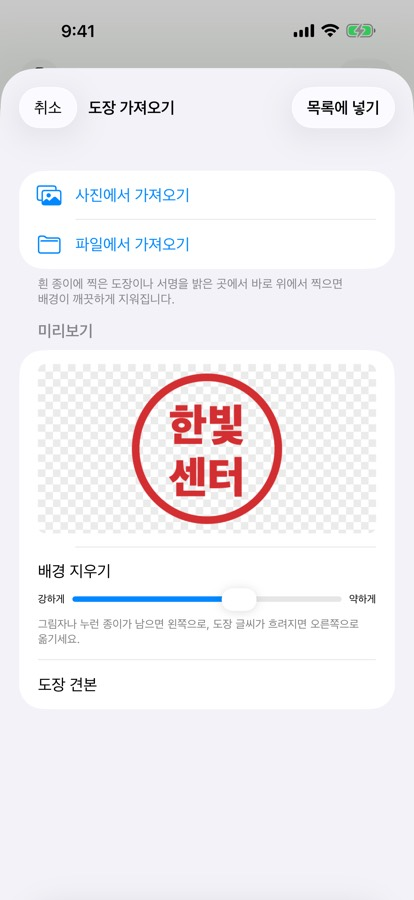
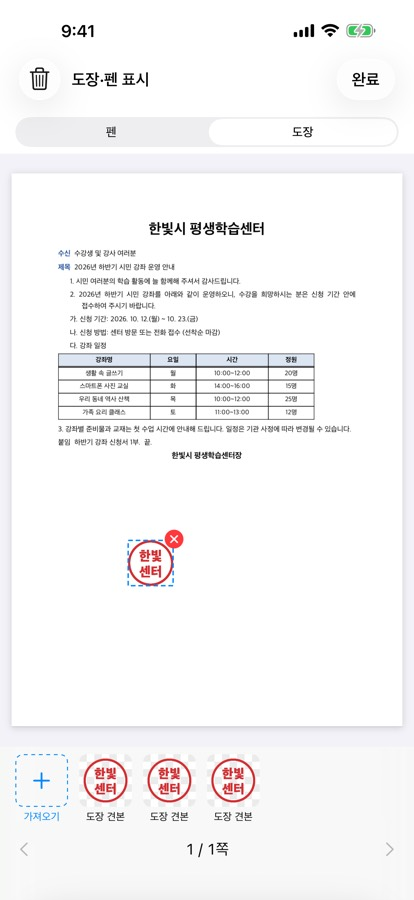
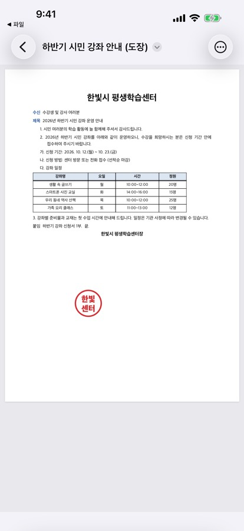

아이폰에서 한글 문서에 도장 찍기
HWP 뷰어를 만드는 개발자 ongsim이 직접 쓴 안내입니다.
이럴 때 씁니다
- 메신저로 받은 한글 신청서·확인서에 ‘(인)’ 자리에 도장을 찍어 다시 보내야 할 때
- 프린터·스캐너 없이 폰에서 도장 찍은 문서를 PDF로 만들고 싶을 때
- 받은 공문에 밑줄이나 표시를 해서 전달하고 싶을 때
iPhone·iPad용 HWP 뷰어 1.1.0 이상. 도장 찍어 보기와 펜 표시는 무료이고, 도장·표시한 문서를 파일로 저장하는 것은 무료 3번(양식 저장과 함께 셈) 뒤에 평생 이용권(한 번 구입, 구독 아님)이 필요합니다.
순서
- 도장 사진 준비: 흰 종이에 도장을 찍고, 밝은 곳에서 바로 위에서 사진을 찍어 둡니다.
- 한글 문서를 HWP 뷰어로 열고 ‘더 보기 › 도장·펜 표시’를 누릅니다.
- 위쪽에서 ‘도장’을 고르고 ‘가져오기’를 누른 뒤 ‘사진에서 가져오기’나 ‘파일에서 가져오기’로 도장 사진을 고릅니다.
- 미리보기에서 종이 배경이 지워진 모습을 확인합니다. 그림자나 누런 종이가 남으면 ‘배경 지우기’ 막대를 왼쪽(강하게)으로, 도장 글씨가 흐려지면 오른쪽으로 옮기고 ‘목록에 넣기’를 누릅니다.
- 아래 목록의 도장을 누르면 쪽 위에 찍힙니다. 끌어서 ‘(인)’ 자리로 옮기고 ‘완료’를 누릅니다.
- ‘PDF로 저장’이나 ‘한글 파일로 저장’으로 새 파일을 만들어 카카오톡·메일로 보냅니다.



알아 두면 좋은 것
- 원본은 그대로: 저장하면 ‘(도장)’이나 ‘(표시)’가 붙은 새 파일이 생기고, 받은 원본 문서는 바뀌지 않습니다.
- 한글 파일로 저장: 도장은 HWPX 문서에서 새 한글 파일(HWPX)에 들어갑니다. HWP 문서는 PDF로 저장합니다.
- 펜 표시: ‘펜’을 고르면 밑줄·동그라미 같은 표시를 그릴 수 있습니다. 펜 표시는 PDF·쪽 이미지에만 들어가고 한글 파일에는 들어가지 않습니다.
- 지우기: 찍은 도장은 빨간 × 단추로, 표시 전체는 휴지통 단추로 지웁니다. 지우기는 언제나 무료입니다.
- 도장 목록: 가져온 도장은 이 기기에만 보관되어(1.2.0부터는 내 iCloud로 같은 Apple ID의 iPad에서도) 다음 문서에도 바로 씁니다.
- 법적 효력: 사진으로 찍은 도장 이미지를 받아 주는지는 문서를 받는 곳마다 다릅니다. 원본 날인이 필요한 서류인지 먼저 확인하세요.
1.1.0에서 함께 생긴 것
- 쪽 목록·쪽 이동: 긴 문서도 쪽 그림 목록이나 쪽 번호로 바로 이동합니다.
- 야간 보기: 화면만 어둡게 읽고, 저장·인쇄는 원본 그대로입니다.
- 문서 속 링크: 웹 주소는 확인한 뒤 열고, 책갈피 링크는 그 위치로 바로 이동합니다.
- 문서 정보: 글자 수와 200자 원고지 매수를 봅니다(세는 기준).
- PDF 저장 수정: PDF로 저장할 때 쪽마다 빈 쪽이 붙던 문제를 고쳤습니다.
양식 빈칸 채우기·손글씨 서명은 가정통신문 회신서 작성·서명, 글자를 고치는 방법은 한글 문서 글자 고치기, PDF 저장·인쇄는 한글 파일을 PDF로 바꾸기를 보세요.
자주 묻는 질문
서명과 도장은 무엇이 다른가요?
서명은 ‘양식 채우기’에서 손가락으로 그려 ‘(서명)’ 자리에 넣습니다. 도장은 종이에 찍은 도장 사진을 가져와 쪽 어디에나 놓습니다.
도장 사진이 서버로 올라가나요?
아닙니다. 배경 지우기와 저장은 모두 기기 안에서 합니다. 광고와 구독도 없습니다.
맥에서도 되나요?
도장·펜 표시는 지금 iPhone·iPad 버전에 있습니다.